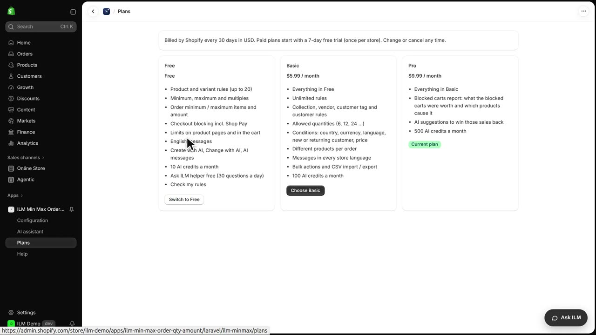
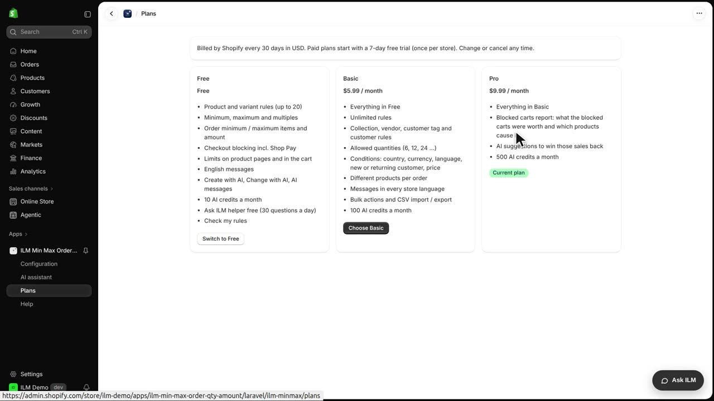

The app has three plans, and they are billed through Shopify on your normal Shopify bill. Choosing the right plan matters because each one unlocks different rule types and limits. Today we will look at the Plans page in the ILM Demo store and see exactly what Free, Basic and Pro include.
Open Plans in the app menu. The Free plan covers up to twenty product rules, with minimum, maximum and multiples, plus checkout blocking. A small shop selling just the Classic Cotton T-Shirt and the Everyday Hoodie could set a minimum quantity on each and stay comfortably within that limit.

Basic adds unlimited rules, collection, vendor, product type and customer rules, date windows, conditions and every store language. Pro adds the blocked carts report and the most AI credits. For example, a store with the Tea & Coffee collection from ILM Pantry could use Basic to set a rule across that whole collection, while a busy store wanting to review blocked carts would move to Pro.
Paid plans start with a free trial. You can change or cancel the plan here at any time. Lessons that need a paid plan say so, so you always know before you start.
